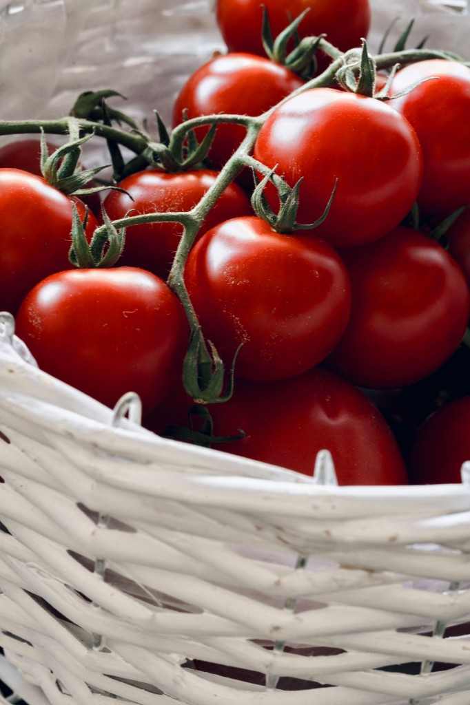

Tomatoes (Solanum lycopersicum)
First Cultivated: ~500 BCE
Optimal Climate: Warm temperate with ample sun
Water Requirement: 20 to 28 inches annually
Tomatoes were domesticated in Mesoamerica from wild Andean ancestors and used in sauces and stews long before the Columbian Exchange. After reaching Europe and Asia, they transformed Mediterranean and global cooking. Fresh fruit, paste, and canned tomatoes now rank among the world's most important vegetable crops.